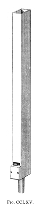

Melodica English
Mélodie French

|
Melodia English Melodica English Mélodie French |
|
An open wooden flute of 8' pitch, usually with inverted mouths. Its tone has been described variously as smooth, singing, round, rich, warm, and mellow. Audsley gives it a slight horn-like timbre in the tenor and middle octaves, and says that it �furnishes an admirable foundation for the most delicate labial and lingual combinations�. Sumner, on the other hand calls it a poor blender. According to Maclean, its tone suggests the �aw� vowel sound, and lists the following stops as belonging to the Melodia family:
|
Flauto Traverso Flauto Amabile |
Flûte Triangulaire Hohlflöte Suabe Flute |
Vienna Flute Waldflöte |
The Melodia was popular in the USA and Canada from the middle of the 19th century through the early 20th. Grove states that it was also popular in England, though Audsley claims it was unknown in English organ-building, the closest match being the Waldflöte, and no examples are known outside of the USA and Canada. Bonavia-Hunt considers the Waldflöte and Melodia to be one and the same; Wedgwood equates the Melodia with the English Waldflöte or Hohlflöte. Locher likens its intonation to that of the Flauto Dolce. It is not known who invented it, but the earliest known examples are by E. & G. G. Hook (see below), who seem to have used it extensively. The scale of the Melodia is moderate to large. Audsley provides the illustration reproduced here, and the following details of its construction:
The pipes forming the true Melodia are of wood and quadrangular: white pine being used for their sides and backs, and some close-grained hard wood, such as mahogany or maple, for the fronts from tenor C to the top note. The pipes of the bass octave may have fronts of pine with hard wood mouth pieces. The mouths are of the inverted form, and are cut up about one-third their width in height. The caps to be of hard wood, hollowed, and the wind-way formed in them, and to be set below the under lip of the mouth just sufficiently to produce perfect intonation. The block is set about half the internal width of the pipe below the under lip. The scale of the stop varies in different examples, but the following may be accepted as suitable [ratio 1:2.66]:
It is a common practice to insert the bass octave in covered pipes, so as to save money; but this practice is contrary to the canons of artistic and correct organ-building, one of which is: Each stop in the Organ must be carried thoughout its compass in pipes of its own class and tonality.
CC C c1 c2 c3 c4 Width 3.34" 2.05" 1.25" 0.77" 0.47" 0.29" Depth 4.44" 2.73" 1.67" 1.02" 0.63" 0.38"
Osiris contains about 150 examples of Melodia, all at 8' pitch except for two at 4' and one at 16'; three examples of Mélodie, and one of Melodica.
Melodia (treble) 8', Great; Westville United Methodist Church, New Haven, Connecticut, USA; Hook 1852. Originally built for Chapel St. Church, New Haven.
Melodia 8', Great; First Congregational Society (Unitarian), Jamaica Plain, Massachusetts, USA; Hook 1854.
Melodua (treble) 8', Great; United Methodist Church, Westbrook, Maine, USA; Hook 1854.
Melodie 8', Positif Expressiv; Notre Dame Basilica, Montreal, Canada; Casavant 1890-91.
Mélodie 8', Grand Orgue; Notre Dame R.C. Church, Pittsfield, Massachusetts, USA; Casavant 1897. Wood, open from tenor G.
Mélodie 8', Grand Orgue; St. Anne's Acadamy Chapel, Victoria, British Columbia, Canada; Casavant 1913.
Melodica 8', Schwellwerk; Domes St. Maria (Cathedral), Riga, Latvia; Walcker 1883 (restored 1983).
|
Original website compiled by Edward L. Stauff. For educational use only. Melodia.html - Last updated 17 May 2008. |
Home Full Index |